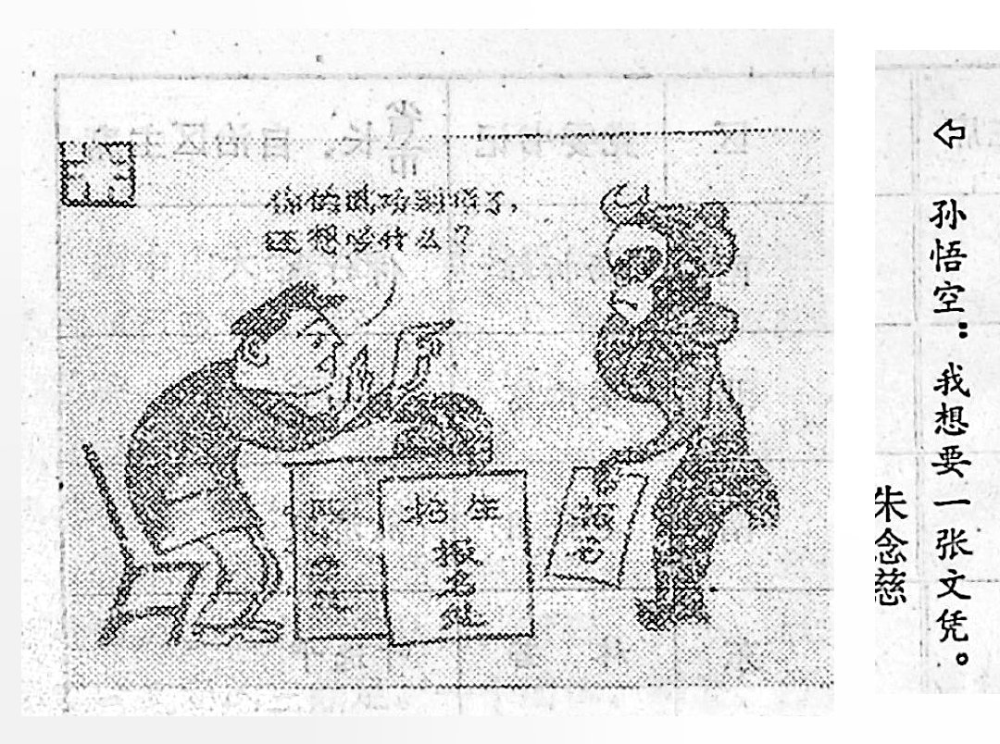

朱念慈 《人事》1985年第2期（总第2期），第47页
无题
Untitled (“Sun Wukong: I want a diploma”)
- Caption
- 孙悟空：我想要一张文凭。
Sun Wukong: I'd like a diploma. - Text in the drawing
- 你的武功到家了，还想要什么？ / 招生报名处
Your kung fu is already perfect — what more could you want? / Enrollment office - Description
- At an enrollment desk, a clerk asks Sun Wukong, the Monkey King, what more he could want with kung fu like his; Sun Wukong, form in hand, wants a diploma.
- Note
- Sun Wukong, hero of Journey to the West, is the archetype of untaught genius. In 1985 diplomas (文凭) were becoming the gate to cadre posts and titles.
- Artist
- Zhu Nianci 朱念慈
- Published in
- 《人事》1985年第2期（总第2期）, p. 47
- Themes
- Diplomas and credentials · Talent and its neglect · Fable, legend and history

Cite
Zhu Nianci, “无题” [Untitled (“Sun Wukong: I want a diploma”)], Renshi (Personnel) 《人事》, 1985, no. 2, p. 47.